How to use this lesson
§0 · From last time. Lessons 14.1-14.3 covered text-based decisions. Real agents increasingly handle images, PDFs, and screens. Claude's multi-modal features replace bespoke extraction layers — knowing which to use is core architect skill.
Business Scenario
Acme E-commerce, Tuesday.
Ronnie Park has three new use cases:
- Return photos — customers submit photos of damaged products. Today, human agents review every photo. Volume: ~3K/day. Estimated 60% can be auto-classified ("clearly damaged in transit" vs "user damage" vs "unclear").
- Vendor PDF invoices — accounting team manually extracts line items from 500 PDF invoices/week. Each PDF is 5-15 pages, often scanned.
- Internal IT support agent — wants to navigate the IT ticketing system on behalf of users to fix common issues.
Lin Chen asks: "Do we build extraction pipelines for each, or use Claude's built-in multi-modal features?"
Bridge to Topic
Claude has native support for images, PDFs, citations, and (in beta) computer use. Choosing native features over extraction layers usually wins on cost, accuracy, and engineering time — but only if you know what's available and what the trade-offs are.
Mind Map

Mermaid source
mindmap
root((Multi-Modal))
Vision
base64 vs URL
supported formats
multi-image per turn
max image size
use cases
PDF Native
base64 or url
vision-based processing
up to 100 pages
no extraction layer needed
Citations API
document blocks
citations.enabled true
structured citations in output
use for compliance
Computer Use Beta
tool spec
screenshot input
action output
sandbox required
latency
Files API
upload once
reuse across calls
reduces retransmission cost
Elaboration
4.1 Vision (image inputs)
await client.messages.create({
model: "claude-sonnet-4-6",
max_tokens: 1024,
messages: [{
role: "user",
content: [
{ type: "image", source: { type: "base64", media_type: "image/jpeg", data: base64String } },
{ type: "text", text: "Is this product damaged in transit, by the user, or unclear? Explain." },
],
}],
});
Two source forms:
base64— embed the image directly. Best for one-off; counts toward your request size.url— Claude fetches the image. Best for re-use; image must be publicly accessible.
Supported formats: JPEG, PNG, GIF, WebP. Maximum 5MB per image (base64) or no size limit (URL fetch). Up to ~20 images per message.
For Acme's return photos: vision-classify with Sonnet, ~$0.005 per image. Eliminates ~60% of human review = ~1,800 photos/day saved = ~30 hours/day of agent time = ~$1,500/day labour. Vision API cost: ~$15/day. Massive ROI.
4.2 PDF native processing
PDFs are sent as document content blocks:
messages: [{
role: "user",
content: [
{ type: "document", source: { type: "base64", media_type: "application/pdf", data: pdfBase64 } },
{ type: "text", text: "Extract line items as JSON: { sku, description, qty, unit_price, total }" },
],
}]
PDFs are processed using vision under the hood (each page is rendered + analysed). This means:
- Scanned PDFs work (no OCR layer needed)
- Tables and forms are extracted accurately
- Up to 100 pages per PDF
- Cost: priced per visual page (~equivalent to a Sonnet vision call per page)
For Acme's invoices: average 8 pages × ~$0.005/page = $0.04 per PDF. At 500/week = $20/week. Replaces a manual extraction pipeline that probably costs >$2K/week in labour. Order-of-magnitude win.
4.3 Citations API
When extracting facts from documents (regulatory text, research papers, legal contracts), you want Claude to cite which passage supports each claim. Set citations.enabled: true on the document block:
messages: [{
role: "user",
content: [
{
type: "document",
source: { type: "base64", media_type: "application/pdf", data: regulationPDF },
title: "EU AI Act, Chapter III",
citations: { enabled: true },
},
{ type: "text", text: "What are the obligations for high-risk AI systems?" },
],
}]
Response includes citation metadata:
response.content = [
{ type: "text", text: "High-risk AI systems must implement risk management.",
citations: [{ type: "page_location", document_index: 0,
document_title: "EU AI Act, Chapter III",
start_page_number: 14, end_page_number: 14,
cited_text: "Article 9: Risk management system shall be established..." }] },
]
This is native citation faithfulness (Module 5.3) — no need to build the verification layer yourself. For HSBC compliance and Helix research, this is the right primitive.
4.4 Computer Use (beta)
Claude can be given screen control — it sees screenshots and emits actions:
await client.messages.create({
model: "claude-sonnet-4-6",
max_tokens: 2048,
tools: [
{ type: "computer_20250124", name: "computer", display_width_px: 1024, display_height_px: 768 },
{ type: "text_editor_20250124", name: "str_replace_editor" },
{ type: "bash_20250124", name: "bash" },
],
messages: [{ role: "user", content: "Open the IT ticketing system, find ticket #12345, mark it resolved." }],
});
The model responds with tool_use blocks for computer actions: key, type, mouse_move, left_click, screenshot, etc. Your client executes them and returns screenshots as tool_result.
Critical: computer use REQUIRES a sandboxed environment. Running it on your own desktop is a security nightmare. Use a VM, a container with VNC, or Anthropic's hosted sandbox.
For Acme's IT support agent: viable in 2026 but expensive (each iteration sends a screenshot ≈ 1500 tokens of vision + emits tool actions). Real-time use cases are challenging on cost; async / batch use cases are fine.
4.5 Files API
When you'd otherwise re-send the same PDF/image across many calls, use the Files API:
// Upload once
const file = await client.beta.files.upload({
file: pdfStream,
filename: "annual-report.pdf",
});
// Reference in messages
messages: [{
role: "user",
content: [
{ type: "document", source: { type: "file", file_id: file.id } },
{ type: "text", text: "Summarise the strategy section." },
],
}]
The file lives at Anthropic; calls referencing it don't re-transmit. Useful for batch jobs that process the same document multiple times, or for shared documents across team agents.
Problem Statement
For Acme's three use cases, design the right Claude features + costs + when to switch to native vs custom.
Solution Walkthrough
1. Return photos (3K/day)
Architecture:
- Vision via Sonnet, single API call per photo
- Output schema (strict tool use): { classification, confidence, evidence_described }
- Confidence > 0.85: auto-classify, file routing decision
- Confidence ≤ 0.85: route to human
Cost: 3000 × $0.005 = $15/day
Labour saved: ~1800 photos auto-handled × ~1 min = 30 hours/day
Net: massive positive ROI
2. PDF invoices (500/week)
Architecture:
- PDF as document block, Sonnet, citations enabled
- Output schema: array of line items + invoice metadata
- Files API for shared vendor templates (reuse same context across invoices from same vendor)
Cost: 500 × ~8 pages × $0.005 = ~$20/week
Labour saved: vs ~$2-3K/week manual extraction → ~100× ROI
3. IT support agent (computer use)
Architecture:
- Sandboxed VM with the IT ticketing system loaded
- Computer use tool + bash tool + text_editor tool
- Run in background (not real-time UX — user submits ticket, agent processes in <5min)
- Strict allowed-actions list (cannot delete users, cannot escalate permissions, etc.)
- Human review for any action affecting >1 user
Cost: ~$0.50-1.50 per ticket (computer use is expensive)
Labour saved: ~5-15 min per ticket of L1 support time
Risk: highest of the three — sandbox + permission scoping critical
Verdict: pilot in shadow mode for 1 month, evaluate cost-vs-quality
before going live.
Mathematical Foundation
7.1 Image cost calculation
Image tokens are calculated by (width × height) / 750 ≈ ~1,150 tokens per typical 1024×768 image. Then:
image_cost = image_tokens × Pin
For a Sonnet call with one 1024×768 image:
- Image: ~1,150 tokens × $3/M = $0.003
- Text prompt: ~200 tokens × $3/M = $0.0006
- Output: ~200 tokens × $15/M = $0.003
- Total: ~$0.006
7.2 PDF cost = sum of page costs
Each page of a PDF is processed as an image. So an 8-page PDF costs ~8 × (one image call).
7.3 Computer use loop cost
Each loop iteration: screenshot (~1500 tokens vision) + reasoning + 1-3 actions. At Sonnet pricing, ~$0.02-0.05 per iteration. Tasks needing 30-50 iterations = ~$1-2.50.
Technical Deep-Dive
8.1 When to use base64 vs URL
| Use case | Recommendation |
|---|---|
| One-off image, varies per call | base64 |
| Same image used many times | upload via Files API |
| Image already at a stable public URL | URL |
| Image is private but you can pre-sign URLs | pre-signed URL |
URLs save your client's bandwidth (Anthropic fetches). base64 is simpler but inflates request payload.
8.2 PDF preprocessing — when worth it
Native PDF works for most cases. Preprocessing (extract text first, send text only) wins when:
- The PDF is text-native and small
- You have thousands of pages — text extraction is cheaper than vision-per-page
- You need exact text (vision may slightly paraphrase formatting)
For invoices, contracts, research papers: native PDF is the right call. For data-warehouse-style "we have 1M pages and need each line": preprocess.
8.3 Citation faithfulness vs the M5.3 pattern
Module 5.3 builds citation faithfulness as a post-processing audit step. With the Citations API:
- Citations are generated structurally — no extraction step
- Each citation includes page location, document title, and exact
cited_text - Your audit code just checks the citation exists in the source — much simpler
For new builds: prefer Citations API. For retrofitting existing RAG: M5.3's pattern still works.
8.4 Computer use sandbox options
| Sandbox | Notes |
|---|---|
| Anthropic-hosted (recommended for prototype) | Easiest; ~$0.10/min compute on top of API cost |
| Docker + VNC | Self-hosted; gives you control |
| Firecracker microVM | Best isolation; complex ops |
| Cloud VM with display server | Flexible but expensive at scale |
Never run computer use against your real production systems without a sandbox. The model occasionally clicks wrong things.
8.5 The "vision is also reasoning" insight
When you pass an image to Claude, it sees + reasons about the image in the same model call. You don't need a separate "describe the image" step before reasoning. This is different from older multi-modal architectures.
For Acme's return photos: don't extract "tear visible in upper left" first then reason. Just ask "is this transit damage or user damage?" — Claude handles both perception and reasoning.
What This Unlocks
- Lesson 14.5 covers Batch API which supports all these multi-modal features
- Module 5 RAG can be substantially simplified using the Citations API
- Module 10 Audit uses Citations API output as native compliance evidence